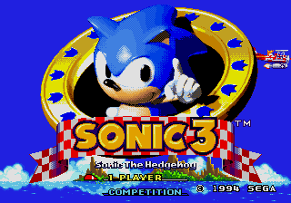

You are listening to: Snow Cap Remix - Chris Francis
*Mega Drive*Sonic the Hedgehog 3 Cheats and Tips

Game Info | Music | Cheat Codes | Boxes
Contents
*Level Select*
*Debug Mode*
*Super Sonic*
*Secret Special Stage*
*All Chaos Emeralds*
*Extra Lives*
*Level Select*
 When the Sega logo disappears and Sonic jumps towards you, quickly press Up, Up, Down, Down, Up, Up, Up, Up. This is very hard to do but it does work, and it'll be worth it. You will hear a chime if you got it. If you do, press Down twice, and you'll see a hidden selection called "Sound Test" on the title screen. Slect this and press Start to choose your starting level and to listen to the music.
When the Sega logo disappears and Sonic jumps towards you, quickly press Up, Up, Down, Down, Up, Up, Up, Up. This is very hard to do but it does work, and it'll be worth it. You will hear a chime if you got it. If you do, press Down twice, and you'll see a hidden selection called "Sound Test" on the title screen. Slect this and press Start to choose your starting level and to listen to the music.
*Debug Mode*
 First activate the level select. Then highlight desired starting level and press A+Start. You know the drill, B to become a sprite, C to place the sprite, and A to change sprites. Press B again to once again return to Sonic.
First activate the level select. Then highlight desired starting level and press A+Start. You know the drill, B to become a sprite, C to place the sprite, and A to change sprites. Press B again to once again return to Sonic.
*Super Sonic*
 First of all, activate Level Select (above) and then the Debug Mode (also above) on your starting level. Press B until you reach a monitor. Place it with the C button. It will be have an 'S' inside it. Destroy it and you will transform into Super Sonic!
First of all, activate Level Select (above) and then the Debug Mode (also above) on your starting level. Press B until you reach a monitor. Place it with the C button. It will be have an 'S' inside it. Destroy it and you will transform into Super Sonic!
*Secret Special Stage*
 First activate the Level Select. Then in the Level select sound test, play tunes 01 and then 0F. Next highlight the Special stage 2 and hold A while pressing Start.
First activate the Level Select. Then in the Level select sound test, play tunes 01 and then 0F. Next highlight the Special stage 2 and hold A while pressing Start.
*All Chaos Emeralds*
First activate the level select. Then go to the Sound test menu and play sounds 02, 04, 05, 06 in that order.
*Extra Lives*
When you get to Launch Base Zone Act One stands between the two first alarm boxes. These will bring flybots that will try to attack you, but aha! While still standing there, before the badnik attacks, do your spin dash and don't let go of the button. The flybots will fly right into your spin dash, which will destroy them. Stay there and the flybots will keep on comig, one by one, and in the end each flybot will give you 10,000 points! That means for every five you gain a life! Keep doing this until you're maxxed out on lives!*Send in your cheats, codes and walkthroughs to Dreadknux!*
dreadknux@knuckles.co.uk
Fill in the form!